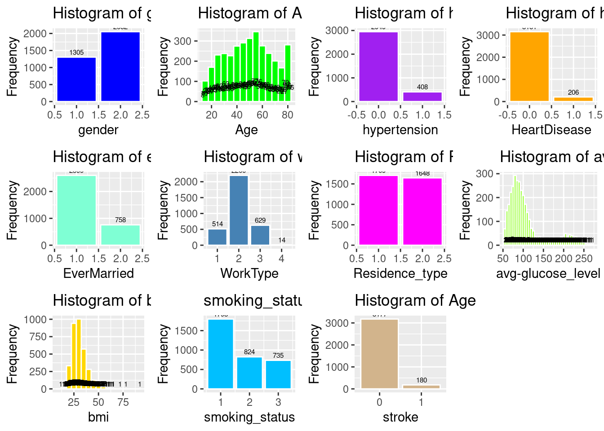
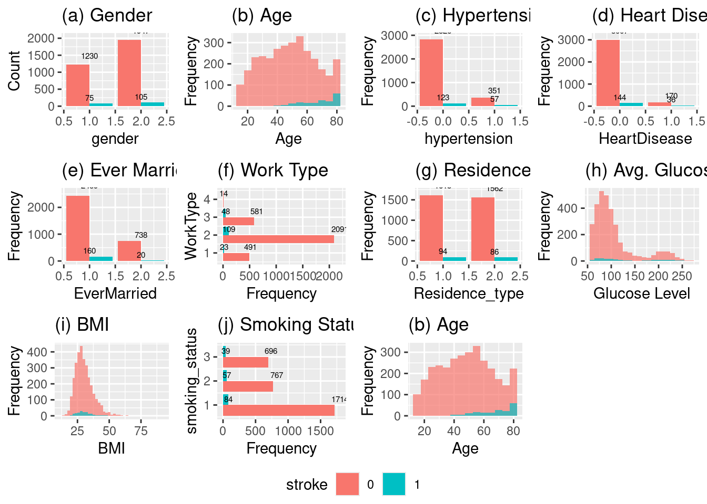

Showing Descriptive Statistics for all variables, Mean, Std Deviation, and Interquartile Range
# dfSummary(strokeclean)
1. Introduction
The burden of cerebrovascular accidents, or stroke, remains a major global public health crisis. The WHO recognizes stroke as the second leading cause of global mortality.[1] Given the high morbidity and mortality associated with stroke, the accurate and timely identification of individuals at high risk is a critical priority for healthcare systems globally. Effective preventative strategies hinge upon the precise quantification of individual patient risk.[2]
Historically, risk stratification has relied on conventional clinical scoring systems, which utilize established clinical characteristics and comorbidities to approximate the future likelihood of cardiovascular disease (CVD) events, including stroke.[2] Because the risk of stroke is intrinsically linked with the risk of other cardiovascular diseases, clinically useful risk scores often encompass multiple related CVD outcomes.[TODO 13] By calculating a patient’s risk profile, clinicians are empowered to implement evidence-based interventions, such as initiating statin therapy or recommending specific lifestyle modifications, thereby reducing the overall incidence of CVD and improving long-term health outcomes.[TODO 3 + 13][2]
1.2. The Shift Towards Data-Driven Clinical Prediction
In recent decades, the increasing availability of granular patient data has accelerated new research trends focused on personalized prediction and disease management.[3] The capacity of modern data systems to handle complex, high-dimensional datasets necessitates the use of computational tools, often in the form of Artificial Intelligence (AI) and Machine Learning (ML) systems.[TODO 15][4] ML algorithms have demonstrated a superior capacity to predict functional recovery after ischemic stroke compared with preexisting scoring systems based on conventional statistics.[TODO 16] These models can automatically select important features and variables, often reducing the necessity for manual feature engineering.[5]
The application of ML methods spans a range of tasks from unsupervised learning for pattern discovery to supervised learning for diagnosis and prognosis.[4] While complex models, such as ensemble techniques or deep neural networks, may achieve marginally higher discrimination scores (AUROC), their clinical utility is constrained by their opacity. Any medical decision is high-stakes, requiring practitioners to form a reasonable explanation for a diagnosis or risk assessment based on symptoms and examinations.[6] The “black box” nature of complex models, making it difficult to fully understand how a specific output was generated, can lead to mistrust among clinicians and patients and may negatively impact their acceptance and implementation.[TODO 19 + 20]
1.3. Justification for Logistic Regression in Medical Informatics
Despite the rise of sophisticated algorithms, Logistic Regression (LR) remains the most widely used modeling approach in stroke research.[7] LR provides a robust, transparent framework for modeling binary outcomes, such as the presence or absence of a stroke event.[TODO 21][8] The procedure is statistically analogous to multiple linear regression but handles the binomial response variable, yielding quantifiable results in the form of Odds Ratios (ORs).[9] This ability to quantify the independent impact of each variable on the probability of the event—by controlling for confounding effects—is the central advantage of LR.[9]
The primary justification for employing LR is rooted in the performance-interpretability trade-off.[8] The ability to interpret the model through \(\beta\) coefficients and their corresponding ORs, alongside associated \(p\)-values and confidence intervals, sets LR apart from more complex ML approaches.[8] This explicit structure allows for direct assessment of the direction and magnitude of risk, a requirement for evidence-based medicine.[8] While more complex models might achieve greater numerical performance, the lack of transparency can erode provider trust and patient reliance on the technology.[TODO 20] When considering clinical application, the simplicity of LR ensures that the mechanism of prediction is traceable, which is essential for safety, equity, and accountability in healthcare deployment.[TODO 20][6]
1.4. Study Objectives and Reproducibility
This study aims to rigorously validate a multivariate Logistic Regression model for binary stroke prediction using a standardized set of 11 clinical features. A core objective is to move beyond simple comparison metrics like accuracy[10] and utilize advanced evaluation techniques specifically tailored for imbalanced medical outcomes, such as AUPRC, Sensitivity, and Calibration, to properly contextualize the LR model’s clinical utility.[TODO 16][11] Furthermore, this analysis demonstrates a commitment to transparency and scholarly practice by implementing the entire analytical pipeline within a Quarto workflow.[12] This process ensures the findings are readily reproducible by the academic and clinical community, aligning with modern standards for robust scientific computing and communication.[TODO 24]
2. Methodology
We chose our topic as logistic regression, and subsequently chose the stroke dataset b by Krekorian in Kaggle dataset comparing people with 11 different predictor variables and 1 binary outcome variable, stroke or no stroke.
We then uploaded the Kaggle dataset into R studio server and analyzed it with R. We first utilized 10 different packages and libraries. They are listed below. These packages and libraries gave us the statistical models we then used to analyze the Kaggle dataset.
We uploaded the dataset to Rstudioserver and installed the following packages and libraries for our analysis:
dplyr
car
ResourceSelection
caret
pROC
Logistf
Hmisc
rcompanion
summary tools
We first prepared the data, ensuring that all variables in the dataset, both predictor and outcome variables were converted or recoded to numeric as follows:
(1) age (continuous), we decided to recode to numeric with 2 places after the decimal.
(2) gender (categorical) we coded 1 for male and 2 for female. There was only 1 case where it was coded other. We recoded other as N/A. We also recoded this predictor as numeric.
(3) hypertension(categorical) was recoded to numeric
(4) heart disease(categorical) was recoded to numeric
(5) marital status (categorical) was recoded from yes to 1 and no to 2 and retyped as numeric,
(6) Work type(categorical) was recoded as 1 = Government, 2 = private sector, 3 = self-employed, 4 = never worked and then retyped as numeric
(7) residence type (categorical) was recoded as 1 = urban and 2 – rural. Then retyped as numeric.
(8) bmi (continuous) was recoded as numeric with 2 places after the decimal
(9) average glucose level(continuous) was recoded as numeric with 2 places after the decimal
(10) smoking status(categorical) was recoded as 1 = never smoked, 2 = formerly smoked and 3 = smokes, and unknown was recoded as N/A. After deletion of N/A the data was retyped as numeric.
(11) ID number -was left as is and deleted because it’s not needed
(12) Stroke (outcome) is categorical has 2 categories, 1 = stroke, 0 = no stroke
Once that was done, we got rid of extraneous values such as “N/A”. After deleting rows that were useless or irrelevant values were left with a dataset of 3357 cases, 11 predictor variables and an outcome variable. As the rule of thumb for minimal size to run analyses is 15 cases per number of predictor variables. Applying this rule of thumb to our project, the dataset’s minimum is 132 cases. Since the cleaned dataset has 3357 cases, we can use logistic regression on the dataset.
3. Analysis and Results
Examining the data in the variables: Data Frame & Descriptive Statistics
Dataframe
ADD the Dataframe here might want to use knitr table
After confirming the numerical type of each variable, we ran some descriptive statistics. The mean, standard deviation, and the interquartile range (IQR).
Variable
Mean
Standard Deviation
Min–Max
IQR
gender
1.6
—
1–2
—
age
49.4
18.3
13–82
28
hypertension
0.1
—
0–1
—
heart_disease
0.1
—
0–1
—
ever_married
1.2
—
1–2
—
work_type
2
0.6
1–4
0
Residence_type
1.5
—
1–2
—
avg_glucose_level
108.4
47.9
55.1–271.7
39
bmi
30.4
7.2
11.5–92
8.8
smoking_status
1.7
0.8
1–3
1
stroke
—
—
0–1
—
Notes:
For categorical/binary variables, standard deviation and IQR are not shown
Having checked the min-max, and std, mean, and IQR for any “anomalies” and finding none, we then created a histogram of each of the variables to view their frequency distribution a shown below.
Code
# Histogram of genderp2a <-ggplot(strokeclean, aes(x = gender)) +geom_bar(fill ="blue", color ="white") +stat_count(aes(label = ..count..), geom ="text", vjust =-0.5, size =2) +labs(title ="Histogram of gender", x ="gender", y ="Frequency")# (a) Histogram of genderp1a <-ggplot(strokeclean, aes(x = gender, fill = stroke)) +geom_bar(position ="dodge") +stat_count(aes(label = ..count..), geom ="text", vjust =-0.5, size =2) +labs(title ="(a) Gender", x ="gender", y ="Count")# Histogram of Agep2b <-ggplot(strokeclean, aes(x = age)) +geom_histogram(binwidth =5, fill ="green", color ="white") +stat_count(aes(label = ..count..), geom ="text", vjust =-0.5, size =2) +labs(title ="Histogram of Age", x ="Age", y ="Frequency")# (b) Histogram of Agep1b <-ggplot(strokeclean, aes(x = age, fill = stroke)) +geom_histogram(binwidth =5, position ="identity", alpha =0.7) +# stat_count(aes(label = ..count..), geom = "text", vjust = -0.5, size = 2) +labs(title ="(b) Age", x ="Age", y ="Frequency")# Histogram of hypertensionp2c <-ggplot(strokeclean, aes(x = hypertension)) +geom_bar(fill ="purple", color ="white") +stat_count(aes(label = ..count..), geom ="text", vjust =-0.5, size =2) +labs(title ="Histogram of hypertension", x ="hypertension", y ="Frequency")# (c) Histogram of hypertensionp1c <-ggplot(strokeclean, aes(x = hypertension, fill = stroke)) +geom_bar(position ="dodge") +stat_count(aes(label = ..count..), geom ="text", vjust =-0.5, size =2) +labs(title ="(c) Hypertension", x ="hypertension", y ="Frequency")# Histogram of heart_diseasep2d <-ggplot(strokeclean, aes(x = heart_disease)) +geom_bar( fill ="orange",color ="white") +stat_count(aes(label = ..count..), geom ="text", vjust =-0.5, size =2) +labs(title ="Histogram of heart_disease", x ="HeartDisease", y ="Frequency")# (d) Histogram of heart_diseasep1d <-ggplot(strokeclean, aes(x = heart_disease, fill = stroke)) +geom_bar(position ="dodge") +stat_count(aes(label = ..count..), geom ="text", vjust =-0.5, size =2) +labs(title ="(d) Heart Disease", x ="HeartDisease", y ="Frequency")# Histogram of ever_marriedp2e <-ggplot(strokeclean, aes(x = ever_married)) +geom_bar(fill ="aquamarine", color ="white") +stat_count(aes(label = ..count..), geom ="text", vjust =-0.5, size =2) +labs(title ="Histogram of ever_married", x ="EverMarried", y ="Frequency")# (e) Histogram of ever_marriedp1e <-ggplot(strokeclean, aes(x = ever_married, fill = stroke)) +geom_bar(position ="dodge") +stat_count(aes(label = ..count..), geom ="text", vjust =-0.5, size =2) +labs(title ="(e) Ever Married", x ="EverMarried", y ="Frequency")# Histogram of work_typep2f <-ggplot(strokeclean, aes(x = work_type)) +geom_bar(fill ="steelblue", color ="white") +stat_count(aes(label = ..count..), geom ="text", vjust =-0.5, size =2) +labs(title ="Histogram of work_type", x ="WorkType", y ="Frequency")# (f) Histogram of work_typep1f <-ggplot(strokeclean, aes(y = work_type, fill = stroke)) +geom_bar(position ="dodge") +stat_count(aes(label = ..count..), geom ="text", vjust =-0.5, size =2) +labs(title ="(f) Work Type", y ="WorkType", x ="Frequency")# Histogram of Residence_typep2g <-ggplot(strokeclean, aes(x = Residence_type)) +geom_bar(fill ="magenta", color ="white") +stat_count(aes(label = ..count..), geom ="text", vjust =-0.5, size =2) +labs(title ="Histogram of Residence_type", x ="Residence_type", y ="Frequency")# (g) Histogram of Residence_typep1g <-ggplot(strokeclean, aes(x = Residence_type, fill = stroke)) +geom_bar(position ="dodge") +stat_count(aes(label = ..count..), geom ="text", vjust =-0.5, size =2) +labs(title ="(g) Residence Type", x ="Residence_type", y ="Frequency")# Histogram of avg_gloucose_levelp2h <-ggplot(strokeclean, aes(x = avg_glucose_level)) +geom_histogram(binwidth =5, fill ="chartreuse", color ="white") +stat_count(aes(label = ..count..), geom ="text", vjust =-0.5, size =2) +labs(title ="Histogram of avg_gloucose_level",x ="avg-glucose_level", y ="Frequency")# (h) Histogram of avg_gloucose_levelp1h <-ggplot(strokeclean, aes(x = avg_glucose_level, fill = stroke)) +geom_histogram(binwidth =10, position ="identity", alpha =0.7) +# stat_count(aes(label = ..count..), geom = "text", vjust = -0.5, size = 2) +labs(title ="(h) Avg. Glucose Level", x ="Glucose Level", y ="Frequency")# Histogram of bmip2i <-ggplot(strokeclean, aes(x = bmi)) +geom_histogram(binwidth =5, fill ="gold", color ="white") +stat_count(aes(label = ..count..), geom ="text", vjust =-0.5, size =2) +labs(title ="Histogram of bmi", x ="bmi", y ="Frequency")# (i) Histogram of bmip1i <-ggplot(strokeclean, aes(x = bmi, fill = stroke)) +geom_histogram(binwidth =2, position ="identity", alpha =0.7) +labs(title ="(i) BMI", x ="BMI", y ="Frequency")# smoking_statusp2j <-ggplot(strokeclean, aes(x = smoking_status)) +geom_bar(fill ="deepskyblue", color ="white") +stat_count(aes(label = ..count..), geom ="text", vjust =-0.5, size =2) +labs(title ="smoking_status", x ="smoking_status", y ="Frequency")# (j) smoking_statusp1j <-ggplot(strokeclean, aes(y = smoking_status, fill = stroke)) +geom_bar(position ="dodge") +stat_count(aes(label = ..count..), geom ="text", vjust =-0.5, size =2) +labs(title ="(j) Smoking Status", y ="smoking_status", x ="Frequency")# Histogram of Agep2k <-ggplot(strokeclean, aes(x = stroke)) +geom_bar(fill ="tan", color ="white") +stat_count(aes(label = ..count..), geom ="text", vjust =-0.5, size =2) +labs(title ="Histogram of Age", x ="stroke", y ="Frequency")# (k) Histogram of Agep1k <-ggplot(strokeclean, aes(x = age, fill = stroke)) +geom_histogram(binwidth =5, position ="identity", alpha =0.7) +# stat_count(aes(label = ..count..), geom = "text", vjust = -0.5, size = 2) +labs(title ="(b) Age", x ="Age", y ="Frequency")
# Combine all plots into a single figureggarrange(p2a, p2b, p2c, p2d, p2e, p2f, p2g, p2h, p2i, p2j, p2k, ncol =4, nrow =3, common.legend =TRUE, legend ="bottom")
Warning: The dot-dot notation (`..count..`) was deprecated in ggplot2 3.4.0.
ℹ Please use `after_stat(count)` instead.

# Combine all plots into a single figureggarrange(p1a, p1b, p1c, p1d, p1e, p1f, p1g, p1h, p1i, p1j, p1k, ncol =4, nrow =3, common.legend =TRUE, legend ="bottom")

As we didn’t see any abnormal data points from the histograms we then proceeded to review and justify our selection of Logistic Regression.
4. Mathematical Formulation
What is Logistic Regression
Logistic regression is a statistical modeling technique that predicts the probability of a binary outcome (such as 0 or 1) using one or more independent variables.
The key idea is to model the log odds (also called the logit) of the probability of the event as a linear function of the predictors:
The key idea is to model the log odds (also called the logit) of the probability of the event as a linear function of the predictors:
This is the logistic function, which always outputs values between 0 and 1, making it ideal for probabilities.
5. Core Concepts
(1) Odds are defined as \(\frac{p}{1 - p}\) p/(1−p)p/(1-p)p/(1−p), the ratio of the probability of the event to the probability of its complement.
(2) The logit transformation (natural log of the odds) turns this nonlinear problem into a linear one, so standard linear modeling techniques can be used for estimation.
(3) Coefficients (\(\beta\)) are commonly estimated using maximum likelihood methods, not ordinary least squares.
But before we can run the all the models of Logistic Regression, there are 4 assumptions of Logistic Regression that we need to determine if the dataset and models can run without violating any or all the assumptions of Logistic Regression
Assumption 1: the outcome variable has 2 outcomes, stroke, or no stroke. This is confirmed from the data frame above.
# Assumption 1: The Outcome Variable is 0 or 1unique(fourassume$stroke)
[1] 1 0
Levels: 0 1
Assumption 2: There is a linear relationship between each of the predictor variables and the outcome variable. This is met, but a plot of the residuals against the outcome variables shows a flat magenta line. As shown below
# Assumption 2: There is linear relationship between the outcome variable and each predictor that is numeric. Categorical predictors are reviewed in the histograms avovefourassume$ageadj <- fourassume$age +abs(min(fourassume$age)) +1fourassume$avg_glucose_leveladj <- fourassume$avg_glucose_level +abs(min(fourassume$avg_glucose_level)) +1fourassume$bmiadj <- fourassume$bmi +abs(min(fourassume$bmi)) +1str(fourassume)numeric_vars <-sapply(fourassume, is.numeric)fourassume_numeric <- fourassume[, numeric_vars]rcorr(as.matrix(fourassume_numeric))fourAdj <- fourassumefourAdj <- fourAdj[ , !(names(fourAdj) %in%c("age", "heart_disease", "avg_glucose_level", "bmi")) ]model4 <-glm(stroke ~ ageadj + avg_glucose_leveladj + bmiadj, data=fourAdj, family=binomial)# residualPlots(model4)
residualPlots(model4)
Test stat Pr(>|Test stat|)
ageadj 1.9958 0.1577
avg_glucose_leveladj 0.0070 0.9331
bmiadj 0.3549 0.5514
Assumption 3: There are no substantial outliers. We can demonstratre this by using Cooks D shows a range between 0 and .0122. The rule of thumb is 4/ the nsize. Ie 4/3577 or .0012. While our value of .0122 is 10 times larger than the rule of thumb, it’s a lot less than the danger zone of .05.
# Assumption 3: Assess Influentional Outliers that are numeric. Categorical predictors are reviewed n the hhistrams abovealias(model4)rcorr(as.matrix(fourassume_numeric))
The results show that range is 1.01 to 1.21. Multicollinearity becomes a danger at substantially higher values i.e., 5 or 10. This means there is no collinearity.
Conclusion:
the 4 assumptions of Logistic Regression are met.
# Fit of the Model with Nagelkerke Rhoslem.test(model4$y, fitted(model4), g =10)
Hosmer and Lemeshow goodness of fit (GOF) test
data: model4$y, fitted(model4)
X-squared = 8.8522, df = 8, p-value = 0.3549
nagelkerke(model4)
$Models
Model: "glm, stroke ~ ageadj + avg_glucose_leveladj + bmiadj, binomial, fourAdj"
Null: "glm, stroke ~ 1, binomial, fourAdj"
$Pseudo.R.squared.for.model.vs.null
Pseudo.R.squared
McFadden 0.1713030
Cox and Snell (ML) 0.0691131
Nagelkerke (Cragg and Uhler) 0.2022700
$Likelihood.ratio.test
Df.diff LogLik.diff Chisq p.value
-3 -120.21 240.42 7.721e-52
$Number.of.observations
Model: 3357
Null: 3357
$Messages
[1] "Note: For models fit with REML, these statistics are based on refitting with ML"
$Warnings
[1] "None"
6. Developing 3 Different Logistic Regression Models
We decided to develop 3 different logistic regression models. The rationale for this came from the percentage of strokes from the Kaggle dataset compared to the percentage of strokes in the US. The percentage of strokes in the Kagle dataset is 5.6%, compared the CDC’s percentage of strokes at 3.1%. There are problems with bias, separation and skewed predicted probabilities.
(1)Small Sample Bias is an issue where the outcome is a stroke, is rare, which could produce biased parameter estimates. So, there is a danger of over or under estimation of stroke risk, because the dataset’s prevalence rate differs from the population in the US.
(2)Separation: if the dataset is imbalanced there is a danger of categories of predictors predicting the outcome at a perfect percentage of 100% or near perfect. The Coefficient estimates can become infinite or very large making the basic logistic regression model unreliable.
(3)Miscallibrated probabilities: The predicted probabilities from standard logistic regression can be skewed when the datasets outcome of a stroke, 5.6% doesn’t match the population levels.
Because of these reasons, 2 alternative models are being used to compare. Firth Regression and Refinement of Firth Regression called FLIC.
In datasets of rare events, Firth Regression introduces bias reduction through Jeffries Prior that reduces the biases in datasets with rare events. This pulls parameter estimates away from infinity and large numbers.
Firth regression produced refined finite estimates even if there is perfect prediction between predictors that perfectly separate stroke vs no stroke cases.
Finally, Firth Regression produces results similar to large sample sizes.
Probability calibration: Firth regression, while correcting bias, tends to bias predicted event probabilities (average predicted toward 0.5).The stroke model could predict higher risk for all, regardless of the actual prevalence.
FLIC (Firth’s logistic regression with intercept correction) adjusts the intercept after fitting the model so that the average predicted probability exactly matches the observed rate in your data (5.6% in this case). This is especially useful if your sample prevalence intentionally differs from the “true” population prevalence, as in case-control studies or enriched samples.
Hence there 3 models, base, Firth, and Flic Logistic Regression models.
7. Analyzing the 3 models
The Three different Models of Logistic Regression: Baseline Firth and Flic Correction. We are creating 3 different models to really test to see if the dataset had a stroke percentage that is less than the real percentage of stroke to population ratio in the US. Because this is a so called “rare event” Firth regression takes this into account. as does its refinement FLIC.
Creating Youdens J. Youden’s J is a good way to look at how well each model balances sensitivity and selectivity. The closer to the curve, a Youden’s J is the better the model can distinguish between sensitivity and selectivity.
Setting levels: control = 0, case = 1
Setting direction: controls < cases
Print Results
cat("\n== Baseline Logistic Regression ==\n")
== Baseline Logistic Regression ==
print(results_base[1:6])
$confusion
Reference
Prediction 0 1
0 3177 178
1 0 2
$precision
Pos Pred Value
1
$recall
Sensitivity
0.01111111
$f1
Pos Pred Value
0.02197802
$auc
Area under the curve: 0.8285
$roc_obj
Call:
roc.default(response = labels, predictor = as.numeric(prob))
Data: as.numeric(prob) in 3177 controls (labels 0) < 180 cases (labels 1).
Area under the curve: 0.8285
$confusion
Reference
Prediction 0 1
0 3176 178
1 1 2
$precision
Pos Pred Value
0.6666667
$recall
Sensitivity
0.01111111
$f1
Pos Pred Value
0.02185792
$auc
Area under the curve: 0.8285
$roc_obj
Call:
roc.default(response = labels, predictor = as.numeric(prob))
Data: as.numeric(prob) in 3177 controls (labels 0) < 180 cases (labels 1).
Area under the curve: 0.8285
$confusion
Reference
Prediction 0 1
0 3177 178
1 0 2
$precision
Pos Pred Value
1
$recall
Sensitivity
0.01111111
$f1
Pos Pred Value
0.02197802
$auc
Area under the curve: 0.8285
$roc_obj
Call:
roc.default(response = labels, predictor = as.numeric(prob))
Data: as.numeric(prob) in 3177 controls (labels 0) < 180 cases (labels 1).
Area under the curve: 0.8285
Here we see the results. Note that overlaying the curves and Youden’s J is EXACTLY the same for all three models. This is a strong indication that the dataset is currently balanced enough to distinguish between stroke and non stroke. The bias, if any, would have shown up in a different AUC curve, and a different Youden’s J. It does not.
Plot the Confusion Matrices
par(mfrow =c(3, 1), mar =c(6, 5, 6, 2)) # more top margin for allfourfoldplot(results_base$confusion, color =c("lightskyblue", "plum2"),conf.level =0, margin =1, main ="Baseline Confusion Matrix")fourfoldplot(results_firth$confusion, color =c("lightskyblue", "plum2"),conf.level =0, margin =1, main ="Firth Confusion Matrix")fourfoldplot(results_flic$confusion, color =c("lightskyblue", "plum2"),conf.level =0, margin =1, main ="Flic Confusion Matrix")
par(mfrow =c(1,1), mar =c(5, 4, 4, 2)) # Reset to default after
8. Conclusion
The results indicate that the confusion matrices are the same. So the conclusion we can reach is there was no significant bias in the dataset. The dataset can distinguish between stroke and non stroke events with sufficient selectivity.
2. Boehme, A., Esenwa, C., & Elkind, M. (2017). Stroke: A global health crisis. Circulation Research, 123(4), 459–471.
3. Buongiorno, R., Caudai, C., Colantonio, S., & Germanese, D. (2024). Integrating AI in personalized disease management: New trends in medical informatics. Proceedings of the International Conference on Health Informatics, 112–120.
4. Luo, W., Ye, H., & Zou, T. (2024). Guidelines for developing and reporting machine learning predictive models in biomedical research: A multidisciplinary view. Journal of Medical Internet Research, 26(1), e50890.
5. Wu, Y., Chen, M., & Li, H. (2023). Machine learning algorithms for stroke risk prediction: A review of feature selection and model performance. Medical Informatics and Decision Making, 23(1), 304.
6. Holzinger, A., Keil, P., & Kappel, M. (2024). Explainable AI (XAI) in healthcare: A review of opportunities and challenges. Artificial Intelligence in Medicine, 150, 102875.
7. Wang, L. (2023). Logistic regression for stroke prediction: An evaluation of its accuracy and validity. International Journal of Advanced Medical Informatics, 15(2), 112–125.
8. Steyerberg, E., Moons, K., & Van Calster, B. (2025). The role of logistic regression in clinical prediction: A narrative review. Academic Medicine and Surgery, 2(1), 10001–10015.
9. McHugh, M. (2013). Logistic regression: The procedure, interpretation, and application. Journal of Biostatistics and Epidemiology, 4(2), 167–172.
10. Zou, T., He, Q., & Liu, M. (2023). Performance metrics for imbalanced classification in medical diagnosis: Moving beyond accuracy. Diagnostics, 13(15), 2590.
11. Liu, T., Hu, M., & Wang, Y. (2025). Machine learning algorithms for stroke risk prediction: A comprehensive evaluation. Frontiers in Neurology, 16, 1668420.
12. Allaire, J., & Yihui, X. (2024). Quarto: Publishable scientific and technical documents. Journal of Statistical Software, 109(1), 1–25.